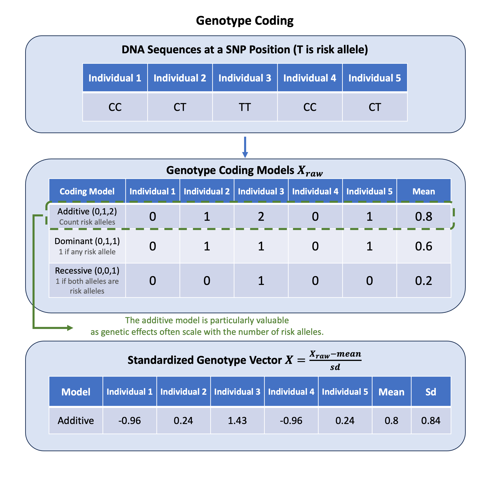

Genotype Coding#
Genotype coding converts DNA nucleotide pairs into numerical values for statistical analysis, with the additive model being particularly valuable because genetic effects often accumulate proportionally with each additional copy of a variant.
Graphical Summary#

Key Formula#
We use \(\mathbf{X}_\text{raw}\) to denote the raw genotype matrix (an \(N \times M\) matrix for \(N\) individuals at \(M\) variants) under the additive coding model with values \(\{0, 1, 2\}\) representing alternative allele counts.
\(\mathbf{X}\) is the standardized genotype matrix. Why standardize? Variants have different allele frequencies and variances. Without standardization, a \(\beta = 0.1\) effect means different things for rare versus common variants. Standardization makes effect sizes comparable across variants, which is essential for multi-variant analyses (see proportion of variance explained, random effect, Bayesian normal mean model).
For each column \(j\) (the \(j\)-th variant):
Where:
\(\mu_j = \frac{1}{N}\sum_{i=1}^{N} X_{\text{raw},ij}\) (mean of the \(j\)-th variant)
\(\sigma_j = \sqrt{\frac{1}{N-1}\sum_{i=1}^{N} (X_{\text{raw},ij} - \mu_j)^2}\) (standard deviation of the \(j\)-th variant)
Technical Details#
Coding Models#
For diploid organisms (with two copies of each chromosome, e.g., human), we can use different coding models:
Genetic Models#
Model |
Values |
Genotype Encoding |
Description |
|---|---|---|---|
Additive (default) |
{0, 1, 2} |
0 = AA (homozygous reference) |
Represents the count of alternative alleles |
Dominant |
{0, 1} |
0 = AA (homozygous reference) |
Represents the presence of at least one copy of the alternative allele |
Recessive |
{0, 1} |
0 = AA or Aa (carries reference allele) |
Represents when both copies of the alternative allele are present |
Standardized Genotype Matrix#
\(\mathbf{X}\) is a normalized version of \(\mathbf{X}_\text{raw}\) where each variant is scaled to have mean 0 and variance 1.
For each column \(j\) (the \(j\)-th variant):
\(\mu_j = \frac{1}{N}\sum_{i=1}^{N} \mathbf{X}_{\text{raw},ij}\) (mean of the \(j\)-th variant)
Represents the average number of alternative alleles at the \(j\)-th variant in the sample under the additive model
\(\sigma_j = \sqrt{\frac{1}{N-1}\sum_{i=1}^{N} (\mathbf{X}_{\text{raw},ij} - \mu_j)^2}\) (standard deviation of the \(j\)-th variant)
Measures the variability in the number of alternative alleles at the \(j\)-th variant
This standardization ensures that:
Each column of \(\mathbf{X}\) has mean 0 and variance 1
The standardized values reflect the deviation from the population mean in units of standard deviation
All variants contribute equally to downstream statistical analyses regardless of their allele frequencies
Example#
Let’s say we have genetic data from 5 individuals tested at 3 different variants. How do we go from the actual genotype calls (like “CC” or “CT”) to the numerical matrices used in statistical genetics? What happens when we apply different coding models to the same data? And how do we standardize these matrices in R?
rm(list = ls())
# Define genotypes for 5 individuals at 3 variants
# These represent actual alleles at each position
# For example, Individual 1 the following nucleotides on three variants: CC, CT, AT
genotypes <- c(
"CC", "CT", "AT", # Individual 1
"TT", "TT", "AA", # Individual 2
"CT", "CT", "AA", # Individual 3
"CC", "TT", "AA", # Individual 4
"CC", "CC", "TT" # Individual 5
)
# Reshape into a matrix
N = 5
M = 3
geno_matrix <- matrix(genotypes, nrow = N, ncol = M, byrow = TRUE)
rownames(geno_matrix) <- paste("Individual", 1:N)
colnames(geno_matrix) <- paste("Variant", 1:M)
The raw genotype matrix is:
geno_matrix
| Variant 1 | Variant 2 | Variant 3 | |
|---|---|---|---|
| Individual 1 | CC | CT | AT |
| Individual 2 | TT | TT | AA |
| Individual 3 | CT | CT | AA |
| Individual 4 | CC | TT | AA |
| Individual 5 | CC | CC | TT |
Then we assign the alternative allele for each variant:
# Define alternative alleles for each variant
alt_alleles <- c("T", "C", "T")
names(alt_alleles) <- colnames(geno_matrix)
Now let’s convert the variants information for the individuals into a raw genotype matrix, under three different models:
# Convert to raw genotype matrix using the additive / dominant / recessive model
Xraw_additive <- matrix(0, nrow=nrow(geno_matrix), ncol=ncol(geno_matrix)) # count number of non-reference alleles
Xraw_dominant <- matrix(0, nrow=nrow(geno_matrix), ncol=ncol(geno_matrix)) # presence of alternative allele
Xraw_recessive <- matrix(0, nrow=nrow(geno_matrix), ncol=ncol(geno_matrix)) # two copies of alternative allele required
rownames(Xraw_additive) <- rownames(Xraw_dominant) <- rownames(Xraw_recessive) <- rownames(geno_matrix)
colnames(Xraw_additive) <- colnames(Xraw_dominant) <- colnames(Xraw_recessive) <- colnames(geno_matrix)
for (i in 1:nrow(geno_matrix)) {
for (j in 1:ncol(geno_matrix)) {
alleles <- strsplit(geno_matrix[i,j], "")[[1]]
Xraw_additive[i,j] <- sum(alleles == alt_alleles[j])
Xraw_dominant[i,j] <- as.integer(any(alleles == alt_alleles[j]))
Xraw_recessive[i,j] <- as.integer(all(alleles == alt_alleles[j]))
}
}
Raw genotype matrix under additive model:
Xraw_additive
| Variant 1 | Variant 2 | Variant 3 | |
|---|---|---|---|
| Individual 1 | 0 | 1 | 1 |
| Individual 2 | 2 | 0 | 0 |
| Individual 3 | 1 | 1 | 0 |
| Individual 4 | 0 | 0 | 0 |
| Individual 5 | 0 | 2 | 2 |
print("Raw genotype matrix (dominant model):")
Xraw_dominant
[1] "Raw genotype matrix (dominant model):"
| Variant 1 | Variant 2 | Variant 3 | |
|---|---|---|---|
| Individual 1 | 0 | 1 | 1 |
| Individual 2 | 1 | 0 | 0 |
| Individual 3 | 1 | 1 | 0 |
| Individual 4 | 0 | 0 | 0 |
| Individual 5 | 0 | 1 | 1 |
print("Raw genotype matrix (recessive model):")
Xraw_recessive
[1] "Raw genotype matrix (recessive model):"
| Variant 1 | Variant 2 | Variant 3 | |
|---|---|---|---|
| Individual 1 | 0 | 0 | 0 |
| Individual 2 | 1 | 0 | 0 |
| Individual 3 | 0 | 0 | 0 |
| Individual 4 | 0 | 0 | 0 |
| Individual 5 | 0 | 1 | 1 |
Then we standardize the raw genotype matrix under each model:
# Standardize each raw genotype matrix
X_additive <- scale(Xraw_additive, center=TRUE, scale=TRUE)
X_dominant <- scale(Xraw_dominant, center=TRUE, scale=TRUE)
X_recessive <- scale(Xraw_recessive, center=TRUE, scale=TRUE)
Here are the standardized matrix \(\mathbf{X}\) for additive, dominant, and recessive models, respectively:
X_additive
| Variant 1 | Variant 2 | Variant 3 | |
|---|---|---|---|
| Individual 1 | -0.6708204 | 0.2390457 | 0.4472136 |
| Individual 2 | 1.5652476 | -0.9561829 | -0.6708204 |
| Individual 3 | 0.4472136 | 0.2390457 | -0.6708204 |
| Individual 4 | -0.6708204 | -0.9561829 | -0.6708204 |
| Individual 5 | -0.6708204 | 1.4342743 | 1.5652476 |
X_dominant
| Variant 1 | Variant 2 | Variant 3 | |
|---|---|---|---|
| Individual 1 | -0.7302967 | 0.7302967 | 1.0954451 |
| Individual 2 | 1.0954451 | -1.0954451 | -0.7302967 |
| Individual 3 | 1.0954451 | 0.7302967 | -0.7302967 |
| Individual 4 | -0.7302967 | -1.0954451 | -0.7302967 |
| Individual 5 | -0.7302967 | 0.7302967 | 1.0954451 |
X_recessive
| Variant 1 | Variant 2 | Variant 3 | |
|---|---|---|---|
| Individual 1 | -0.4472136 | -0.4472136 | -0.4472136 |
| Individual 2 | 1.7888544 | -0.4472136 | -0.4472136 |
| Individual 3 | -0.4472136 | -0.4472136 | -0.4472136 |
| Individual 4 | -0.4472136 | -0.4472136 | -0.4472136 |
| Individual 5 | -0.4472136 | 1.7888544 | 1.7888544 |
Supplementary#
Beyond SNPs: Encoding Different Variant Types#
While we commonly encode SNPs, there are other types of genetic variations where the same principles also apply:
Insertions and Deletions (Indels)
Small insertions or deletions in DNA sequence
Typically encoded using the same 0/1/2 scheme as SNPs
Copy Number Variations (CNVs)
Deletions or duplications of larger DNA segments
Can be encoded as actual copy number (0, 1, 2, 3, etc.)
Structural Variants
Inversions, translocations, and complex rearrangements
Often encoded as binary (presence/absence)
The choice of encoding scheme should reflect the biological hypothesis about how the variant affects the phenotype. For more information, refer to Figure 1 in Cardoso et al., 2015.
{kind=link}